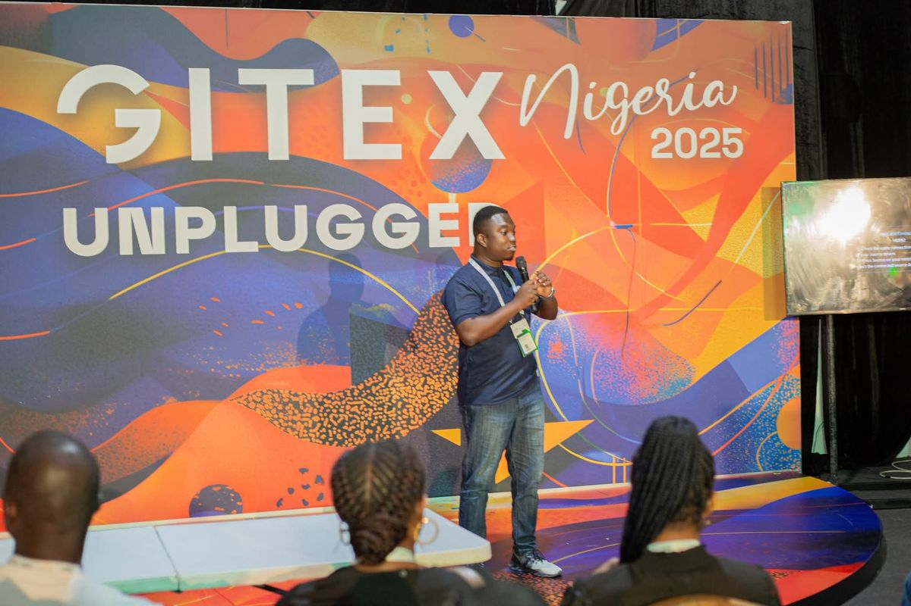

About
I help organisations turn security frameworks into controls that stand up to an audit. Over four years I have completed gap and readiness assessments against ISO/IEC 27001:2022, SOC 2, NIST CSF and PCI DSS, drafted security policies and procedures, assessed third-party vendors and kept risk registers moving to closure.
I work in healthcare, legal and non-profit settings, and I apply the Ghana Data Protection Act (Act 843) and GDPR in my reviews. My first career was in accounting, which is why I treat evidence, reconciliation and segregation of duties as habits rather than checklist items.
What I do
- Risk assessments and risk registers
- ISO 27001 gap analysis and audit readiness
- Internal and IT audit, SOX ITGC testing
- Data protection compliance
- Vendor and third-party risk
- IT asset and software licence compliance
- Incident response, disaster recovery and continuity plans
- User access, privileged access and change control reviews
- Security awareness training
Experience
Founder & CEO, Cybersecurity GRC Consultant, Chayil SecureX
Lead a small team delivering compliance, risk and audit-readiness work. Completed 5+ gap and readiness assessments, drafted 12 security policies and procedures, assessed 7+ vendors, and maintain risk registers for clients (30+ risks in the largest). Represent clients before regulators and external auditors, and designed a 108-point GRC maturity scoring engine for healthcare facilities with a companion version for financial institutions.
Information Security Consultant
Advise research, policy and membership organisations on security governance, data protection frameworks and practical guidance for non-technical staff, and deliver staff awareness training.
Financial Officer
Ran financial reporting, budgeting and compliance, supported audit preparation, and built internal controls including reconciliation processes.
Work samples
Sector templates I built for client engagements. They contain placeholder organisations and illustrative data only, no client information.
ISO 27001 ISMS model
Healthcare ISMS and GRC model
A complete ISO 27001:2022 toolkit for clinics and hospitals: dashboard, risk register, risk appetite, asset and control registers, risk-to-control mapping, treatment plan and Statement of Applicability. The preview shows the dashboard, risk register and Statement of Applicability.
View preview (PDF) Request the full modelGRC maturity self-assessments
Healthcare GRC maturity self-assessment
ISO 27001-aligned questionnaire for healthcare providers with automatic domain scoring, maturity levels and RAG ratings. Try it on your own organisation.
Download (XLSX)Financial institution GRC maturity self-assessment
The same scoring approach built for microfinance, savings and loans, fintechs and rural banks, with questions tied to Bank of Ghana expectations.
View preview (PDF) Request the full toolCombined maturity self-assessment
Healthcare and financial assessments in one workbook with a shared results page, for advisers working across both sectors.
View preview (PDF) Request the full toolPolicies and governance frameworks
Information Security and Privacy Policy
Single governing policy for a professional services firm, mapped to ISO 27001, ISO 27701, NIST CSF 2.0, COSO ERM and the Ghana Data Protection Act.
View PDFInternal Control and Risk Management Framework
Risk governance built on COSO ERM 2017 and COSO Internal Control 2013, including a risk appetite statement.
View PDFTechnology Adoption Strategy
A governance-led approach to evaluating and adopting new technology, aligned to COBIT 2019 and ISO 27001.
View PDFIT Infrastructure and Cybersecurity Measures
Documents the IT environment and the security controls around it: network design, access, endpoints and administration.
View PDFHospital Security Policy
Patient data protection policy covering roles, definitions and compliance with HIPAA and Ghana's Act 843.
View PDFCertifications
Fifteen certifications. Where the issuer offers a public verification page, it is linked.
Audit and ISMS
- ISO/IEC 27001:2022 Lead AuditorInternational Cybersecurity and Digital Forensics Academy, November 2026
- ISO/IEC 27001:2022 Information Security AssociateSkillFront, October 2026
- ISO/IEC 27001:2022 ISMS Foundation Standard & Best PracticeJanuary 2026
- Cybersecurity GRC: IT Audit ProgrammeYesYouCan CyberSecure, September 2024. SOX ITGC testing, PCI DSS, third-party risk
Governance, privacy and AI
- Certified GRC Professional (CGRCP)VerifyRed Team Leaders, November 2026
- Certified Threat Intelligence & Governance Analyst (CTIGA)VerifyRed Team Leaders, November 2026
- AI Security & GovernanceSecuriti, 1.5 CPE
- PrivacyOps Academy CertifiedSecuriti, 4 CPE
- Google AI Professional CertificateVerifyCoursera / Google, October 2026
Security operations and awareness
- Google Cybersecurity Professional CertificateVerifyCoursera / Google, October 2026
- Certified SME Cyber Security Officer (CSCSO)EU Cyber Academy, October 2026
- Certified Ransomware Protection Officer (CRPO)EU Cyber Academy, October 2026
- Certified Cybersecurity Educator Professional (CCEP)VerifyRed Team Leaders, November 2026
- Cyber Threat ManagementCisco Networking Academy, October 2026
- Introduction to CybersecurityCisco Networking Academy, March 2026
Next: CISA, planned for the second half of 2027.
Speaking and media
- Moderator, MOBEX Africa 2026 session
- Represented Ghana’s digital ecosystem at GITEX Nigeria 2025
- Panelist and moderator, Fintech for Inclusion Africa Summit, on cybersecurity and digital trust
- Featured cybersecurity expert on national media (TV3, MX24)

Memberships and education
Internet Society (Global and Ghana Chapter). Institute of ICT Professionals Ghana (IIPGH), Security Working Group and Editorial Board. Association of Cybersecurity Experts.
BSc Business Administration (Accounting), University of Education, Winneba.
Contact
hagancharles14@gmail.com
linkedin.com/in/charles-hagan-itaudit1